0시작 전에 준비할 것
| 무엇 | 왜 필요한가 | 꼭? |
|---|---|---|
| Windows PC | 프로그램이 Windows용입니다 | 필수 |
| Claude 유료 요금제 또는 ChatGPT 계정 | AI가 대본을 씁니다. 사용량은 본인 요금제에서 차감됩니다 | 둘 중 하나 필수 |
| OpenDART 인증키 | 오늘의 공시를 불러옵니다 | 필수 |
| 구글(유튜브) 계정 | 유튜브 쇼츠 자동 업로드 | 원할 때 |
| 인스타그램 + 페이스북 계정 | 릴스 자동 업로드 | 원할 때 |
| 네이버·공공데이터포털 키 | 뉴스 화제·전일 급등락 탭 | 원할 때 |
처음에는 1 → 2 → 3 → 8만 해도 영상을 만들 수 있습니다. 업로드 연결(6·7)은 익숙해진 뒤에 해도 됩니다.
1설치하고 켜기
- 받은
AIShortsFactory-windows.zip을 마우스 오른쪽 버튼으로 눌러 모두 압축 풀기를 합니다. 바탕화면이나 문서 폴더처럼 찾기 쉬운 곳에 풉니다.압축을 풀지 않고 zip 안에서 바로 실행하면 제대로 동작하지 않습니다. - 풀린
AIShortsFactory폴더 안의 AIShortsFactory.exe를 두 번 누릅니다. - "Windows의 PC 보호" 파란 창이 뜨면 추가 정보 → 실행을 누릅니다. 스토어에 올리지 않은 개인 프로그램이라 처음 한 번 뜨는 정상 경고입니다.
- 새 버전을 받으면 예전 폴더를 지우고 새로 풀면 됩니다. 설정과 연결 정보는 그대로 남습니다.
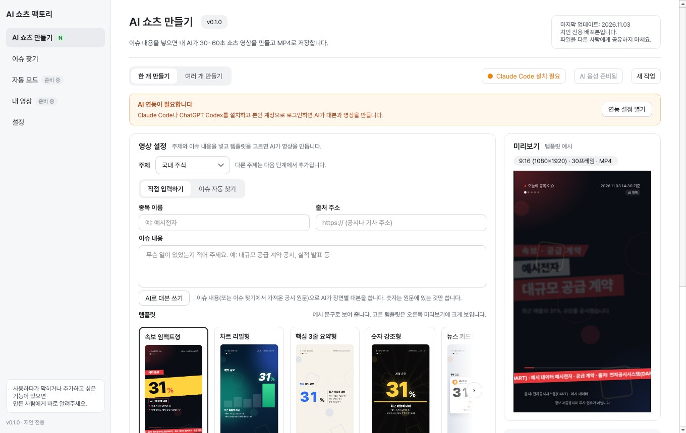
2AI 연결 (Claude Code 또는 ChatGPT Codex)
프로그램이 직접 AI에 로그인하지 않습니다. 내 PC에 공식 Claude Code나 ChatGPT Codex를 설치하고, 각 회사의 공식 로그인 화면에서 직접 로그인합니다. 프로그램은 비밀번호를 보거나 저장하지 않습니다.
- 첫 화면 오른쪽 위 연동 설정 열기를 누릅니다.
- 쓰려는 쪽 탭(Claude Code 또는 ChatGPT Codex)을 고릅니다.
- 창 안의 1 설치 순서대로 합니다: Windows 키 →
PowerShell입력 → 열기 → 창의 복사 버튼으로 명령을 복사해 붙여 넣고 Enter. - 설치가 끝나면 설치 다시 확인을 누릅니다.
- 2 본인 계정으로 로그인 순서대로 로그인합니다. 브라우저에 회사 공식 로그인 화면이 뜹니다.
- 위쪽 칸이 초록색 "설치와 로그인이 끝났습니다"가 되면 ○○ 사용하기를 누르고 닫습니다.
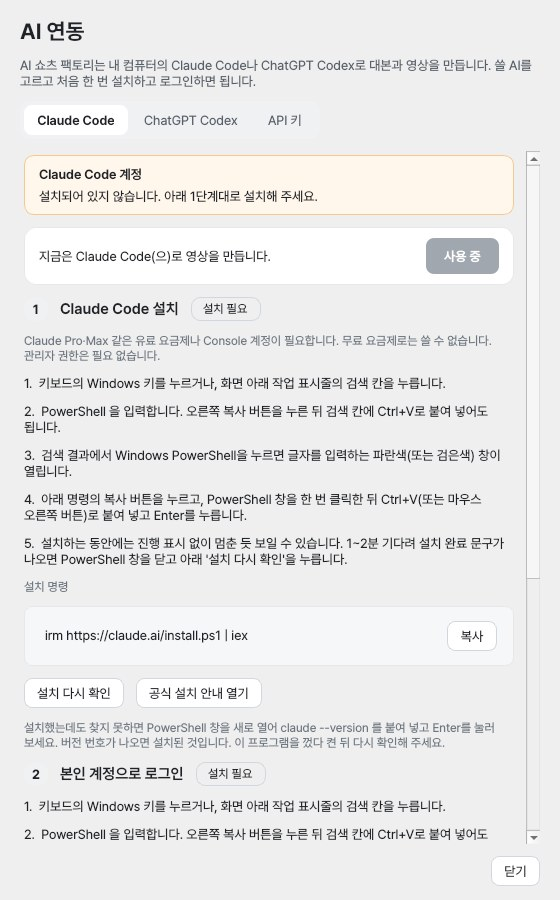
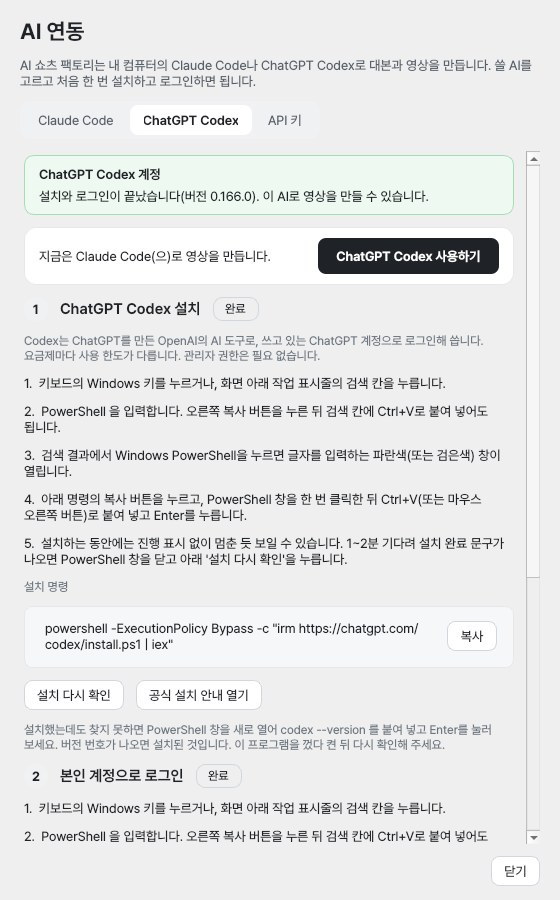
첫 화면 위쪽 표시가 ● Claude Code 연결됨(초록)으로 바뀌면 끝입니다. 주황색이면 아직 연결이 안 된 것입니다.
3공시 키 받기 (DART) — 꼭 필요
금융감독원 전자공시(OpenDART)의 무료 인증키입니다. 이 키가 있어야 '이슈 찾기'에서 오늘의 공시를 불러옵니다.
- 프로그램 왼쪽 설정 → DART 인증키 칸의 인증키 발급받기를 누르면 OpenDART 사이트가 열립니다.
- 사이트에서 인증키 신청을 하고, 이메일로 온 인증을 마치면 40자리 인증키가 나옵니다(무료).
- 인증키를 복사해 DART 인증키 칸에 붙여 넣고 저장 → 연결 확인을 누릅니다.
- "연결 성공" 안내와 함께 ● 연결됨이 나오면 끝입니다.
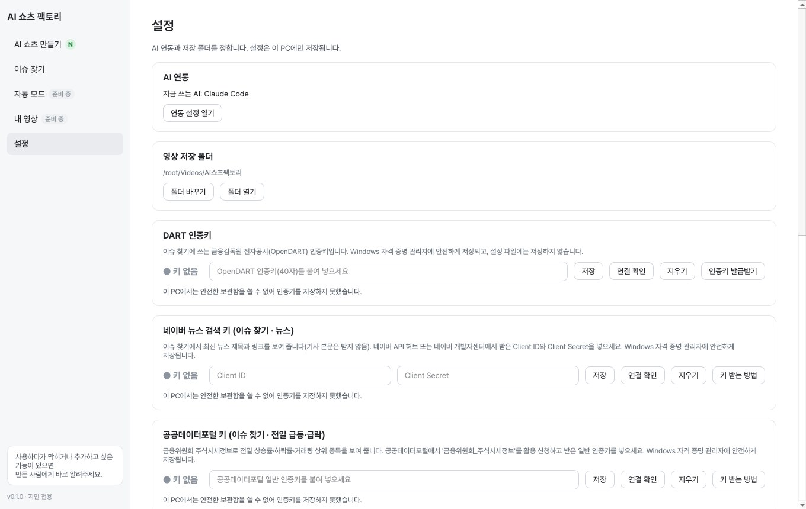
4뉴스 키 받기 (네이버) — 선택
'이슈 찾기 → 뉴스 화제' 탭과 공시 옆 "관련 뉴스 제목"에 씁니다. 없어도 공시 탭은 그대로 쓸 수 있습니다. 프로그램은 뉴스 제목과 링크만 보여 주고, 기사 문장을 영상에 넣지 않습니다.
- 네이버 클라우드 플랫폼의 NAVER API HUB에 들어가 신청하기를 누릅니다(네이버 클라우드 가입 필요).
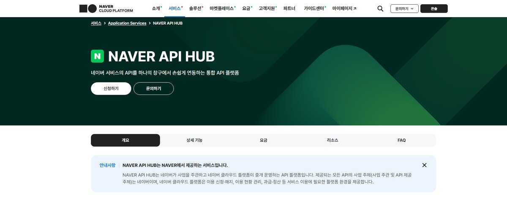
- 콘솔의 API HUB 화면에서 + Application 등록을 누릅니다.
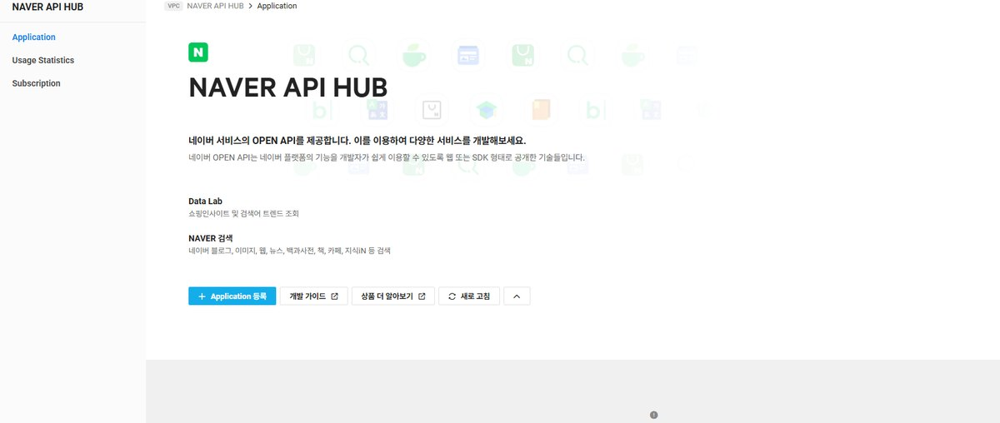
- API 목록에서 뉴스 (NAVER Search News API)를 체크하고 다음 → 이름을 넣어 등록합니다.
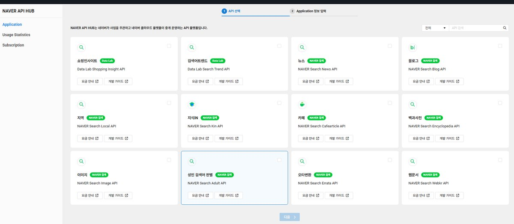
- 등록한 Application의 Client ID와 Client Secret을 프로그램 설정 → 네이버 뉴스 검색 키에 넣고 저장 → 연결 확인.
5시세 키 받기 (공공데이터포털) — 선택
'이슈 찾기 → 전일 급등·급락' 탭에 씁니다. 시세는 실시간이 아니라 다음 영업일 오후에 올라오는 '전일' 자료입니다.
- data.go.kr에 가입·로그인합니다(무료).
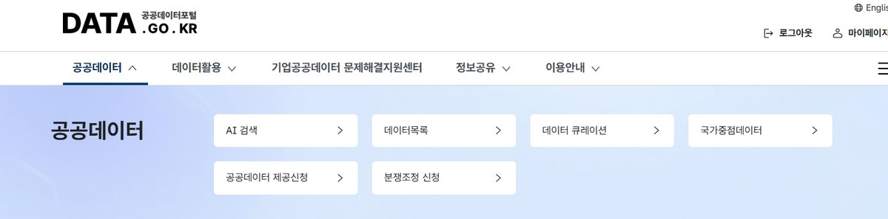
- 검색창에
금융위원회_주식시세정보를 찾아 활용신청을 누르고, 활용 목적을 적어 신청합니다. 보통 바로 승인됩니다.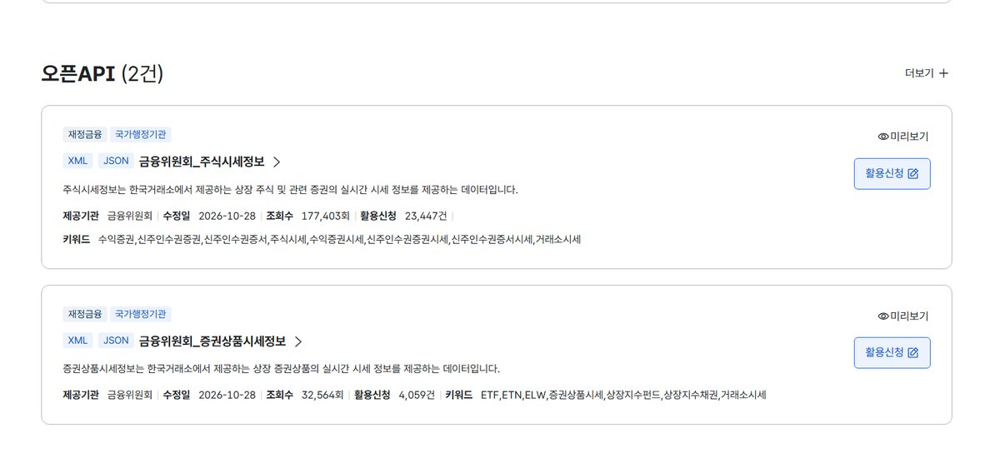
- 마이페이지 → 데이터 활용 → Open API → 인증키 발급 현황의 일반 인증키를 복사합니다(Encoding/Decoding 어느 것이든 됩니다).
- 프로그램 설정 → 공공데이터포털 키에 붙여 넣고 저장 → 연결 확인. 신청 직후에는 키가 동작하기까지 1시간쯤 걸릴 수 있습니다.
6유튜브 연결
구글 쪽 준비(프로젝트 등록)는 프로그램을 나눠 준 사람이 이미 해 두었습니다. 각자는 로그인만 하면 됩니다(1분).
- 프로그램 설정 → 유튜브 연결의 유튜브 연결하기를 누릅니다.
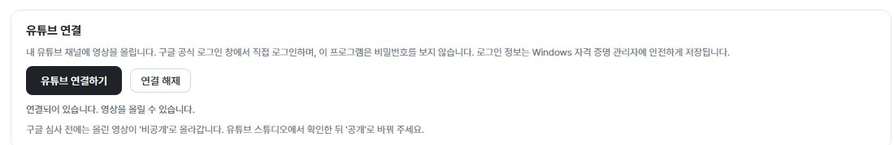
- 브라우저에 구글 로그인 창이 열리면 영상을 올릴 채널의 구글 계정으로 로그인합니다.
- "Google에서 확인하지 않은 앱"이 나오면 정상입니다. 왼쪽의 작은 계속(또는 고급 → 이동)을 누르고, 다음 화면에서 허용합니다.
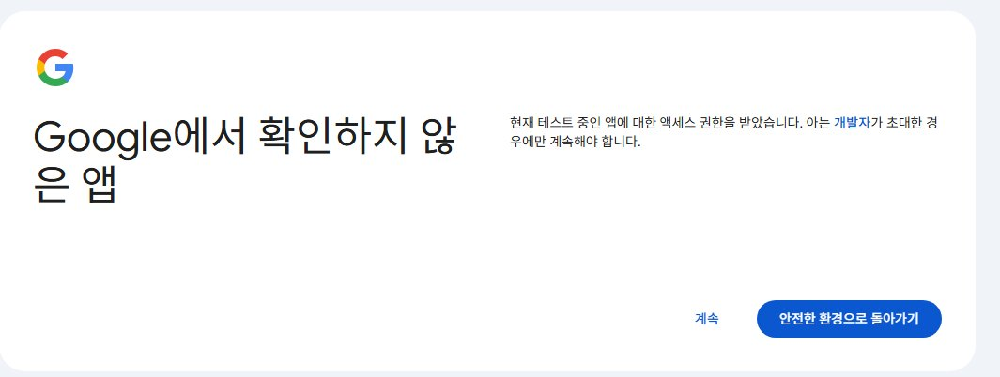
파란 "안전한 환경으로 돌아가기"가 아니라 왼쪽 "계속"을 누릅니다. - "유튜브 연결이 끝났습니다"가 나오면 창을 닫고 프로그램으로 돌아옵니다.
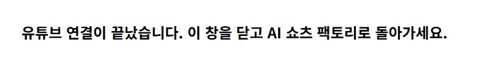
- 설정에 ● 연결됨이 보이면 끝입니다.
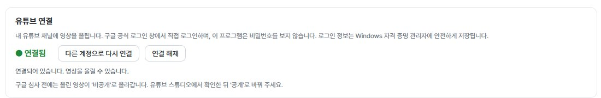
- 영상은 비공개로 올라갑니다(구글 규칙). 유튜브 스튜디오에서 확인한 뒤 공개로 바꿔 주세요.
- 표지(썸네일)는 자동으로 붙습니다. 단, 유튜브 전화번호 인증을 마친 채널만 됩니다(youtube.com/verify).
7인스타그램·페이스북 연결
메타 공식 API로 인스타그램 릴스와 페이스북 페이지 릴스에 올립니다. 연결 키 하나로 둘 다 씁니다. 순서가 길지만 처음 한 번만 하면 됩니다(약 30분).
7-1. 계정 준비 (휴대폰 인스타그램·페이스북 앱에서)
- 인스타그램 앱 → 설정 → 프로페셔널 계정으로 전환 → 비즈니스를 고릅니다(메뉴 이름은 앱 버전마다 조금 다릅니다).
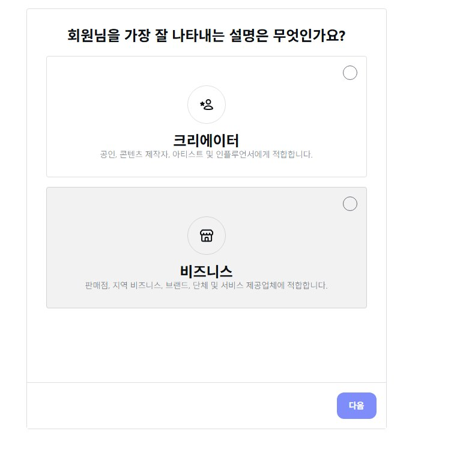
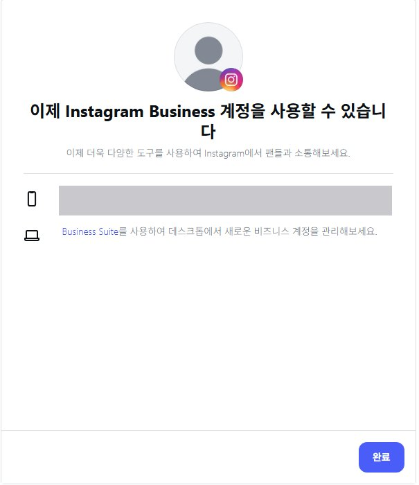
- 페이스북 페이지를 만듭니다(페이지 유형: 비즈니스). PC에서 오류가 나면 휴대폰 페이스북 앱에서 만드는 것이 잘 됩니다.
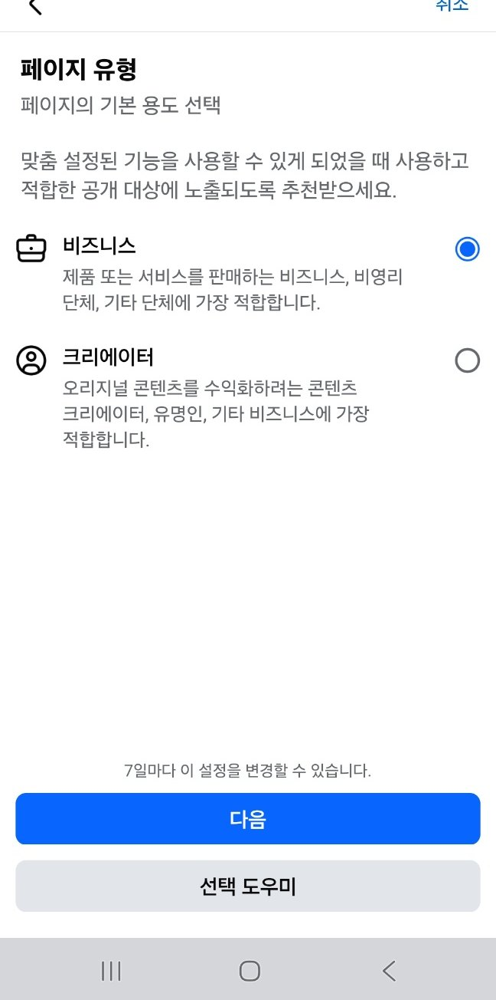
- 인스타그램 앱 → 프로필 편집 → 페이지에서 방금 만든 페이스북 페이지를 골라 연결합니다.
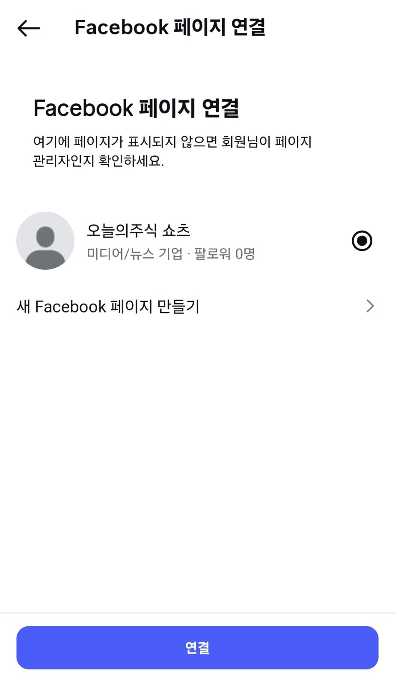
7-2. 메타 개발자 앱 만들기 (PC 브라우저)
- developers.facebook.com에 같은 페이스북 계정으로 들어가 오른쪽 위 시작하기를 누릅니다.
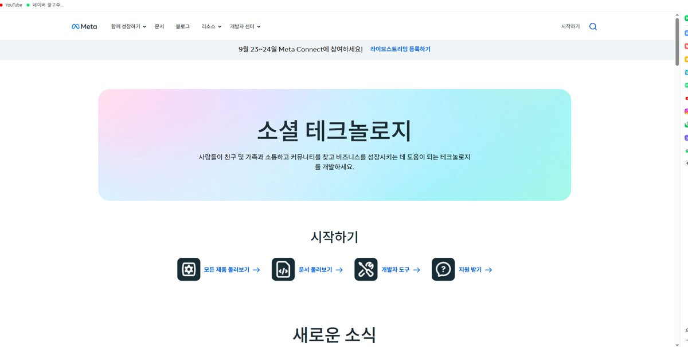
- 계속하기 → 계정 확인 → 연락처 → 역할(아무거나, 예: 기타)을 고르고 등록 완료.
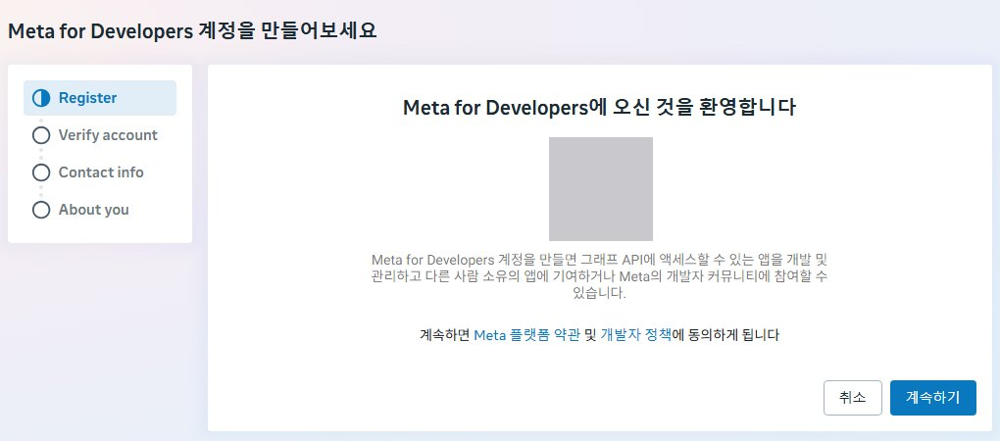
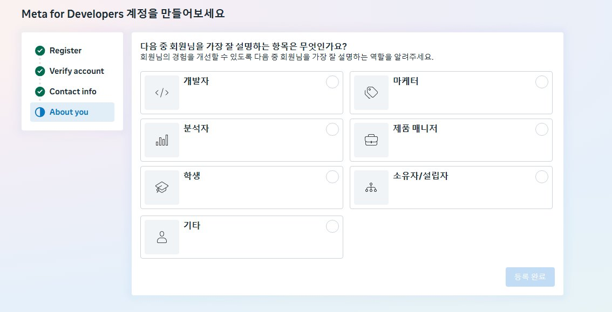
- 내 앱 → 앱 만들기. 이용 사례에서 기타를 고르고 다음, 유형은 비즈니스.
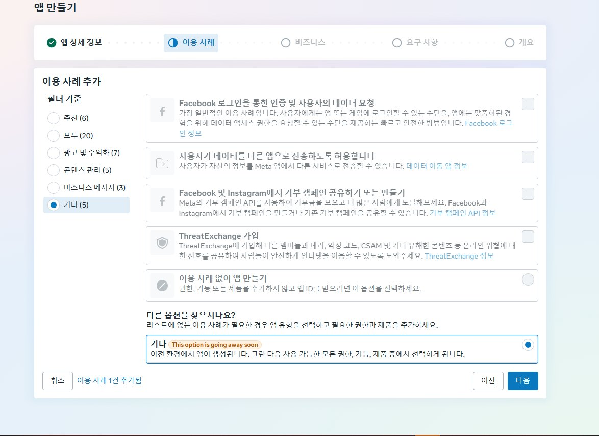
- 앱 이름(예:
AI Shorts Factory)과 내 이메일을 넣고 앱 만들기.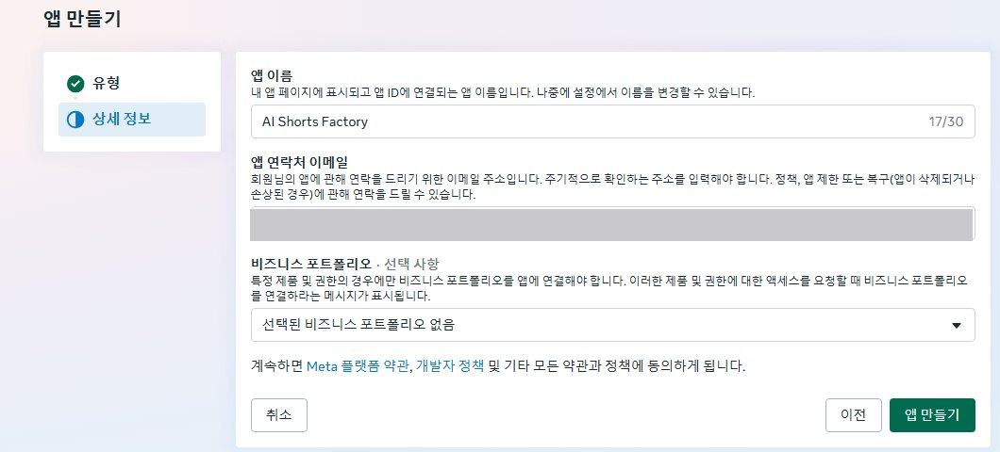
- "추가할 수 있는 제품"에서 Instagram의 설정을 누릅니다.
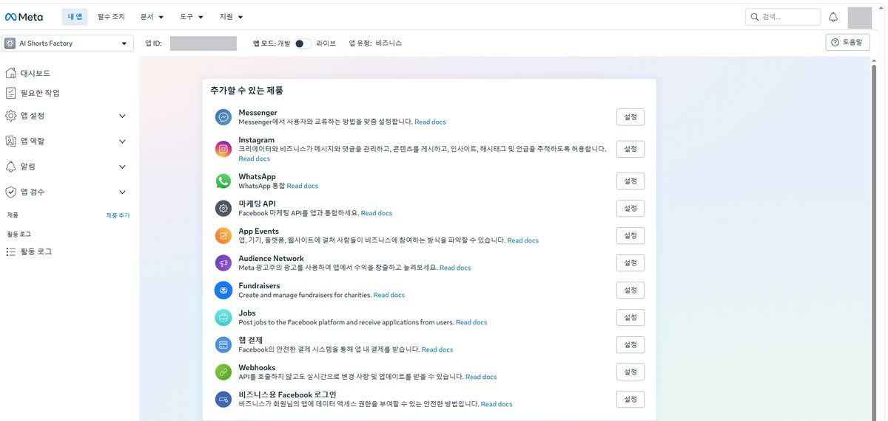
- 왼쪽 Instagram 아래 Facebook 로그인이 포함된 API 설정을 고릅니다. 앱은 개발 모드 그대로 둡니다(심사 필요 없음).
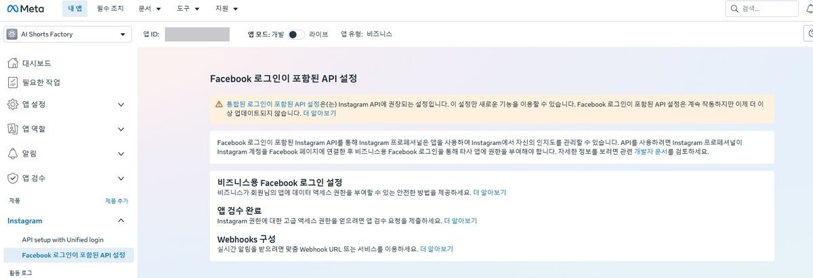
7-3. 연결 키 만들기 (그래프 API 탐색기)
- 그래프 API 탐색기를 엽니다. 오른쪽 Meta 앱에서 방금 만든 앱을 고르고, 사용자 또는 페이지는 사용자 토큰을 고릅니다.
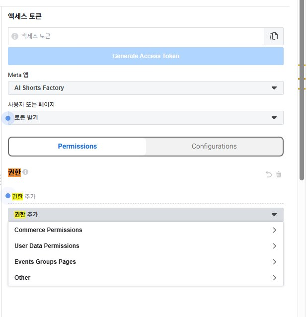
- Permissions → 권한 추가 ▼에서 아래 6개를 모두 넣습니다. 묶음 이름 옆 >를 눌러야 펼쳐집니다.
- Events Groups Pages 묶음:
pages_show_list,pages_read_engagement,pages_manage_posts,business_management - Other 묶음:
instagram_basic,instagram_content_publish
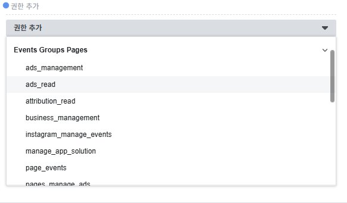
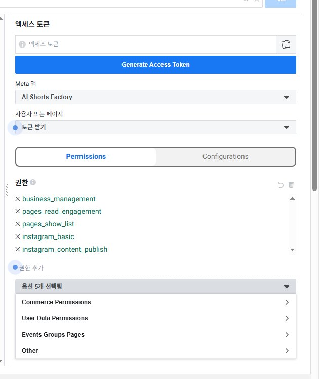
사진은 5개 상태입니다. pages_manage_posts까지 6개를 넣어 주세요(페이스북 페이지용). - Events Groups Pages 묶음:
- Generate Access Token을 누르면 메타 창이 뜹니다. 내 페이지와 인스타그램 계정을 고르고 계속 → 저장.
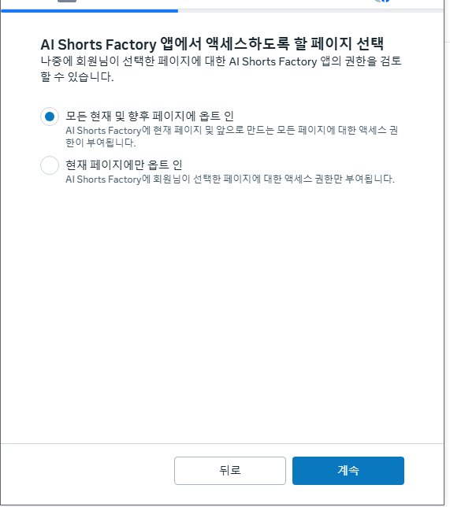
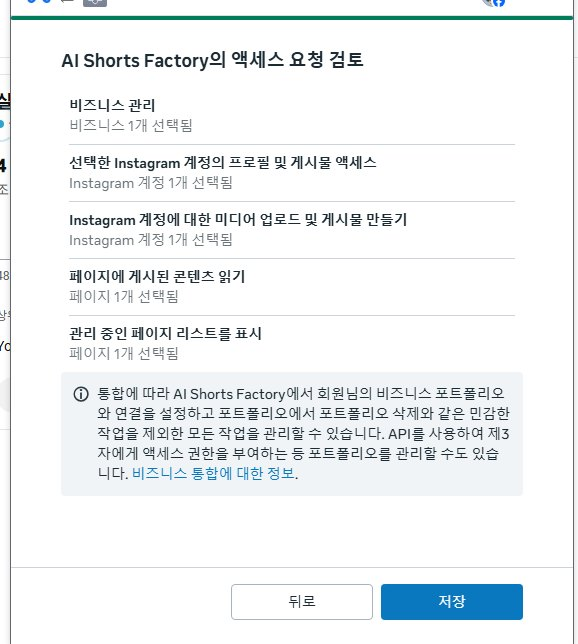
- 위쪽 액세스 토큰 칸의 긴 글자를 복사 아이콘으로 복사합니다. 이 키는 약 1시간짜리입니다.
7-4. 60일짜리로 늘리기
- 액세스 토큰 디버거를 열고, 복사한 키를 붙여 넣어 디버그를 누릅니다.
- 맨 아래 액세스 토큰 확장을 누르고, 새로 나온 키를 복사합니다.
이 화면은 캡처해서 남에게 보내지 마세요. 새 키가 그대로 보입니다.
7-5. 프로그램에 넣기
- 프로그램 설정 → 인스타그램·페이스북 연결 칸에 붙여 넣고 연결을 누릅니다.
- ● 연결됨과 내 인스타그램 아이디가 나오고, "페이스북 페이지(…)에도 릴스를 올릴 수 있습니다"가 보이면 끝입니다. 프로그램은 이 키로 만료일 없는 페이지 키를 받아 안전한 곳(Windows 자격 증명 관리자)에 저장합니다.
8첫 영상 만들고 올리기
- 왼쪽 이슈 찾기 → 공시 탭에서 날짜를 고르고 공시 불러오기. 점수가 높은 공시가 위에 나옵니다.
- 뉴스 화제 탭: 낱말(예: 수주, 실적)을 넣고 뉴스 찾기 → 회사를 고르면 그 회사의 최근 7일 공시로 만듭니다.
- 전일 급등·급락 탭: 시세 불러오기 → 회사를 고릅니다.
- 공시를 하나 고르고 이 이슈로 영상 만들기를 누르면 'AI 쇼츠 만들기' 화면으로 내용이 넘어갑니다.
- AI로 대본 쓰기를 누릅니다. 1~2분 기다리면 대본이 채워집니다. AI는 공시에 있는 숫자만 쓰고, 지어낸 숫자나 투자 권유는 자동으로 걸러집니다.
- 아래 템플릿(17종) 중 하나를 고르거나 AI 디자인을 고릅니다. 오른쪽 미리보기로 바로 확인할 수 있습니다. 목소리·배경음악·영상 길이도 여기서 고릅니다.
- 영상 파일로 저장 (MP4)을 누릅니다. PC에 따라 1~2분쯤 걸립니다. 표지(썸네일)도 자동으로 만들어져 영상 옆에
-표지.jpg로 저장됩니다. - 저장이 끝나면 나오는 창에서 유튜브에 올리기 · 인스타그램에 올리기 · 페이스북에 올리기를 누릅니다. 미리 저장 후 ○○ 업로드 스위치를 켜 두면 저장하자마자 올라갑니다. 제목·설명·해시태그는 자동으로 들어갑니다.
- 틱톡·스레드·X 같은 다른 SNS는 다른 SNS에 올리기(업로드 도우미)로 문구 복사 + 업로드 화면 열기를 도와줍니다(직접 게시).
하나가 실패해도 결과 창의 실패한 곳만 다시 올리기로 그곳만 다시 올릴 수 있습니다.
9설정 알아두기
- 목소리
- 10가지 목소리 + '무작위' + '내레이션 없음'. 이름 옆 ▷로 미리 들을 수 있습니다. AI 목소리를 쓰면 화면의 'AI 제작' 표시는 끌 수 없습니다(목소리 모델 사용 조건).
- 자막
- 기본 / 굵게 / 끔. 목소리가 없으면 자막도 없습니다.
- 표지(썸네일)
- 소식 종류와 영상 밝기에 맞춰 16가지 모양 중에서 자동으로 고릅니다. 설정 스위치로 끌 수 있습니다.
- 사이트 홍보
- 이름·주소·한 줄 소개·해시태그를 한 번 넣으면 영상 마지막 장면과 업로드 글에 자동으로 붙습니다. 주소가 비어 있으면 아무것도 붙지 않습니다.
- 시세 숫자 영상
- 기본 꺼짐. 켤 때 이용 조건 확인 창이 뜹니다. 사이트 홍보 주소가 있으면 켜 두어도 시세 숫자를 쓰지 않습니다.
- 영상 저장 폴더
- 만든 영상이 저장되는 곳. 폴더 열기로 바로 열 수 있습니다.
10막힐 때 (실제로 자주 막힌 곳)
위쪽에 "Claude Code 설치 필요"(주황색)가 계속 떠요
연동 설정 열기에서 설치(1)와 로그인(2)을 모두 했는지 확인하고 설치 다시 확인을 누르세요. 그래도 그대로면 프로그램을 껐다 켜 보세요.
새벽에 공시를 불러왔는데 아무것도 없어요
공시는 보통 평일 낮에 올라옵니다. 새벽·주말·공휴일에는 거의 없습니다. 날짜를 전 영업일로 바꿔 불러오세요.
"대본을 만들지 못했습니다"가 나와요
대부분 목소리 문장이 장면보다 길 때입니다. 영상 길이를 조금 늘리고(예: 30초 → 32초) AI로 대본 쓰기를 다시 누르세요. 공시 내용이 너무 짧아도 실패할 수 있습니다.
'유튜브 연결하기'를 눌렀는데 버튼이 회색으로 멈췄어요
브라우저의 구글 로그인 창에서 로그인과 허용을 끝까지 했는지 확인하세요. 1분이 지나도 그대로면 프로그램을 껐다 켜고 다시 누르세요.
유튜브에 올렸는데 '비공개'예요
정상입니다(구글 규칙). 유튜브 스튜디오에서 확인하고 공개로 바꿔 주세요.
유튜브 표지가 안 바뀌어요
채널의 전화번호 인증이 필요합니다: youtube.com/verify
페이스북 페이지를 만들 때 "오류가 발생했습니다"가 떠요
PC 브라우저에서 자주 생깁니다. 휴대폰 페이스북 앱에서 페이지를 만들면 잘 됩니다.
메타에서 "Can not update your business info"가 떠요 (연락처 정보 검토)
창 아래 연락처 정보 사용 안 함을 눌러 넘어가 보세요. 프로그램 연결에는 이 연락처 정보가 필요하지 않습니다.
그래프 API 탐색기에서 "사용할 수 있는 구성 없음"이 보여요
무시해도 됩니다. 권한 6개를 모두 넣으면 Generate Access Token 버튼이 진해지고 누를 수 있습니다.
'토큰 연장' 버튼이 안 보여요
탐색기가 아니라 액세스 토큰 디버거에서 합니다. 키를 붙여 넣고 디버그 → 맨 아래 액세스 토큰 확장.
인스타그램 칸에 "● 다시 연결 필요"가 떠요
연결 키가 만료됐거나 비밀번호를 바꾼 경우입니다. 7-3 ~ 7-5를 다시 하면 됩니다. 안내 끝 괄호에 메타가 알려 준 이유가 함께 나옵니다.
인스타그램만 "영상 보내기" 단계에서 실패해요
메타 쪽에서 가끔 생기는 일입니다(같은 영상이 페이스북에는 올라감). 몇 분 뒤 결과 창의 실패한 곳만 다시 올리기를 누르세요.
"권한" 오류가 나와요 (인스타·페이스북)
7-3에서 권한 6개를 모두 넣었는지, 키를 만들 때 페이지와 인스타그램 계정을 선택했는지 확인하고 키를 다시 만드세요.
새 버전을 받았는데 연결이 다 풀렸어요
연결 정보는 PC에 따로 저장되어 새 버전에도 남습니다. 다른 PC로 옮겼다면 그 PC에서 다시 연결해야 합니다.
11꼭 지켜 주세요 (안전 수칙)
- 키·연결 키·비밀번호는 채팅이나 메일에 붙여 넣지 마세요. 프로그램 설정 칸에만 넣습니다. 캡처할 때도 가려 주세요.
- 프로그램은 비밀번호를 받지 않습니다. 로그인은 늘 각 회사의 공식 화면에서 합니다.
- 영상에는 투자 유의 문구와 'AI 제작' 표시가 항상 들어갑니다. 투자 권유 영상이 아닙니다.
- 받은 프로그램 파일을 다른 사람에게 다시 나눠 주지 마세요(지인 전용).
더 궁금한 점은 프로그램을 나눠 준 사람에게 물어보세요. · 오늘의주식 쇼츠 소개 · 개인정보처리방침 · 이용약관